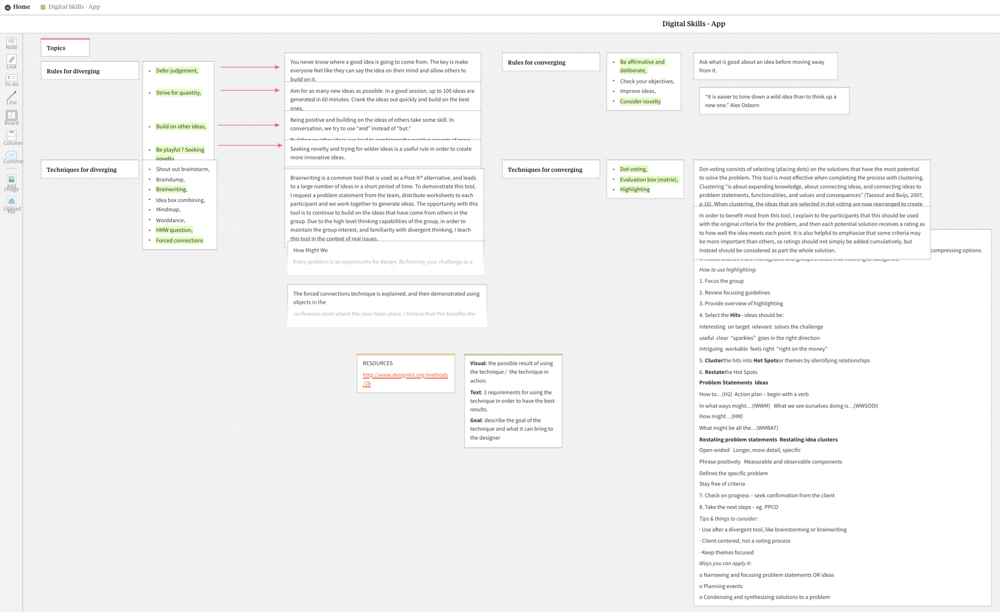

CreativeBox App
OVERVIEW
While learning about the creative process and the different rules and techniques for diverging and converging, I prototyped an app that would help creative people create and save the techniques they love and use most.
THE PROCESS
To better understand the problem I was going to solve with CreativeBox, I started with a research on the creative techniques and rules used by the creative community. I gathered all the info on a Milanote board. In parallel with doing research, I started watching tutorials and learning how to use Adobe XD, since it was the first time using the tool.
As soon as I got a better understanding of the types of information and functionalities someone might need in the digital app, I started prototyping. This phase was an entire journey of iterations, user testing sessions and improvements.
THE RESULTS
The result is an app that allows creating and saving creative techniques and rules. It also allows adding a visual representation of the technique added to the box.
For this project, I was inspired by Duolingo and Google Calendar' design solutions.